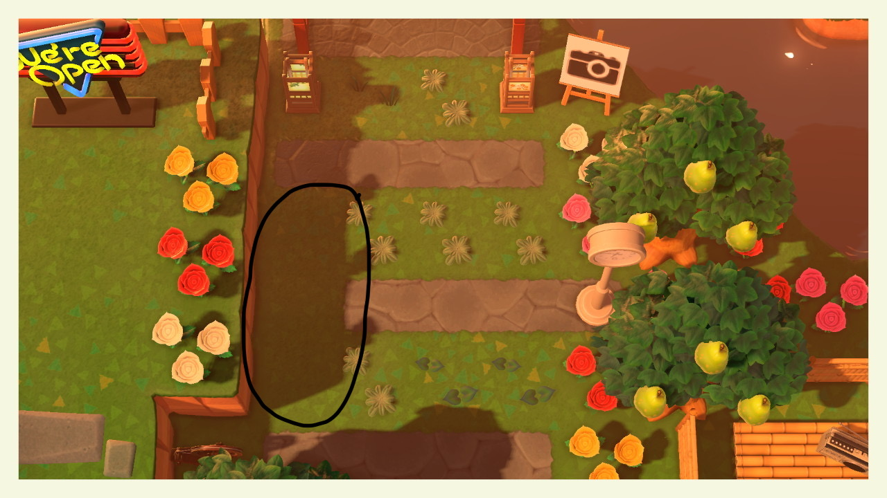
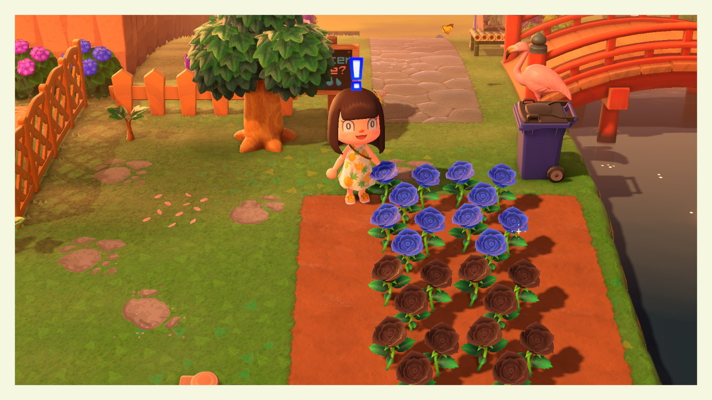
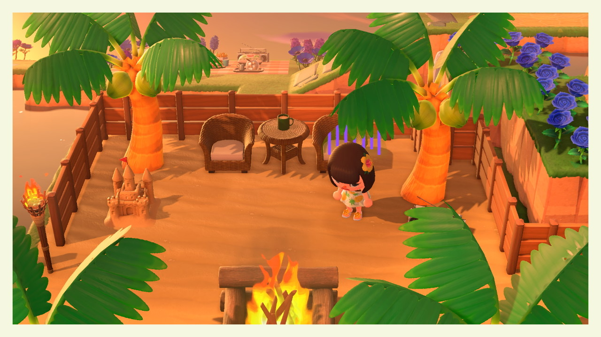
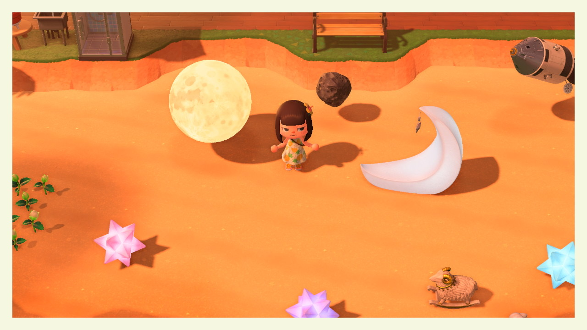

This is a picture of my rock garden.
Rock gardens help neatly organize rocks and seclude them in an area, making it easier for players to get resources without having to run around the island to collect resources everyday. It can also help with island organization so the rocks don't block pathways, making other areas difficult to access. But some people find it quite tedious and difficult so I compiled a list of tips and tricks to help you easily create a rock garden of your own, without the struggle of searching up videos and articles that make it too complicated.
Note: There are many other ways to make a rock garden; this is only one of many methods to make one!
By covering the majority of your island with weeds, you are essentially covering possible spots that rocks may spawn. By leaving only a few spots open, including the spots in your rock garden, it will increase the chances of the rocks spawning in the desired place. Using the method of blocking all spawn points makes creating a rock garden easier and faster than hitting rocks without planting weeds and hoping that they spawn in the rock garden.
The first thing you need to do before you start breaking rocks and filling up your island with weeds is planning the location of your garden. You should first mark out a place that sits in between a dotted line that marks out an acre (as shown above, circled in black). All six rocks are unable to spawn in one acre because the maximum per acre is four rocks. In the picture above, three rocks (with green holes indicating the rocks) were located in each of the acres, A2 and B2. When marking out each spot, I recommend marking them out first, then checking the map to make sure no more than four spaces are located in one acre. If more than four are in an acre, only four rocks will spawn and the remaining two will spawn randomly in other acres.
Preparing to cover your island with weeds is simple, but this seemingly easy step, if not done correctly, can cost you more time creating your rock garden. Here are some tips on filling up your island with weeds. (Also, as a side note, this will ruin your island rating because you're essentially covering most of your island with weeds. Here is a video that uses mannequins instead if you don't have weeds or you're afraid of ruining your island rating.)
The first thing to do is to break all your rocks and completely cover your island with weeds and only leave spaces directly next to a cliff empty (as pictured above). Weeds still need spaces to spawn and if they don't have an empty space to spawn, rocks can't spawn either. No need to worry about stone, brick, wooden, and arched stone paths. Nothing grows on these paths, and rocks don't spawn on them either. The same goes for custom pathing and designs that you displayed on the ground.
Plants and weeds spawn on dirt, and so do rocks! Make sure to cover up any dirt paths more than one block away from edges of rivers and cliffs with weeds to prevent rocks from spawning on them. If you accidentally miss a spot and a rock spawns there, don't worry! Break the rock, plant a weed in the same spot, and check to make sure that any spaces surrounding it are occupied by a weed, flower, or any other object.
Don't forget to plant weeds on sand pathing as well! While flowers don't spawn on sand, rocks and weeds can spawn on them, so make sure to cover every inch of sand pathing with weeds and other objects to prevent rocks from spawning. While I was working on my rock garden, I completely forgot that rocks can spawn on sand and as a result wasted a few days figuring that out.
You might know this already but if you don't know, rocks cannot spawn on your beach despite being able to spawn on sand pathing. No need to waste time planting tons of weeds on your beach because it won't affect where your rocks spawn.
That's it! If you did the preparation correctly, you should have a rock garden in six days (without time traveling). I hope that this guide helped! Thank you so much for reading! And if you're still in the process of making the rock garden, I wish you the best of luck. Making a rock garden is no easy task, but its results are rewarding because you'll no longer have to run around your island to collect resources from rocks. If you're still considering if you should make a rock garden, just know that the rock garden doesn't "complete" your island. Rock gardens are purely for aesthetics. Some people's islands don't have rock gardens and their islands are still really beautiful and pretty!